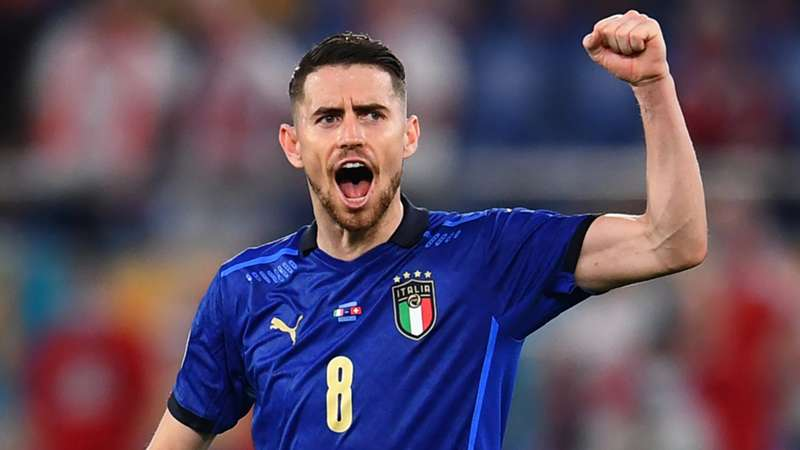

Emiliano Martinez
Damián Emiliano Martínez Romero (born 2 September 1992) is an Argentine professional footballer who plays as a goalkeeper for Premier League club Aston and Argentine national team.

Lionel Messi
Leonel Messi also known as Leo Messi, (born 24 June 1987) is an Argentine professional footballer who plays as a forward and captains the Argentina national team.

Cristiano Ronaldo
Cristiano Ronaldo dos Santos Aveiro GOIH ComM is a Portuguese professional footballer who plays as a forward for Serie A club Juventus and captains the ...

Paulo Dybala
Paulo Exequiel Dybala (born 15 November 1993) is an Argentine professional footballer who plays as a forward for Serie A club Juventus and the Argentina ...

Mesut Ozil
Mesut Özil is a German professional footballer who plays as an attacking midfielder for Süper Lig club Fenerbahçe. Nicknamed "The Assist King", Özil is known ...

Mauro Icardi
Mauro Emanuel Icardi (Spanish pronunciation: [ˈmawɾo emaˈnwel iˈkaɾði]; born 19 February 1993) is an Argentine professional footballer who plays as a ...

Di Maria
Ángel Fabián Di María (born 14 February 1988) is an Argentine professional footballer who plays for Ligue 1 club Paris Saint-Germain and the Argentina ...

Kylian Mbappé
Kylian Mbappé Lottin (born 20 December 1998) is a French professional footballer who plays as a forward for Ligue 1 club Paris Saint-Germain and the France ...

Mohamed Salah
Mohamed Salah Hamed Mahrous Ghaly is an Egyptian professional footballer who plays as a forward for Premier League club Liverpool and captains the Egypt ...

Harry Kane
Harry Edward Kane MBE (born 28 July 1993) is an English professional footballer who plays as a striker for Premier League club Tottenham Hotspur and ...

Kevin De Bruyne
Kevin De Bruyne (born 28 June 1991) is a Belgian professional footballer who plays as a midfielder for Premier League club Manchester City, where he is ...

Philippe Coutinho
Philippe Coutinho Correia (born 12 June 1992) is a Brazilian professional footballer who plays as an attacking midfielder or winger for Spanish club Barcelona ...
All Highlights Copa America 2021
Amet minim mollit non deserunt ullamco est sit aliqua dolor do amet sint. Velit officia consequat duis enim velit mollit. Exercitation veniam consequat sunt nostrud amet.
Watch Now
Latest Video
Latest News
Liverpool
11:40PMHow many trophies has Lionel Messi won with Argentina?
Argentina
04:37AM
